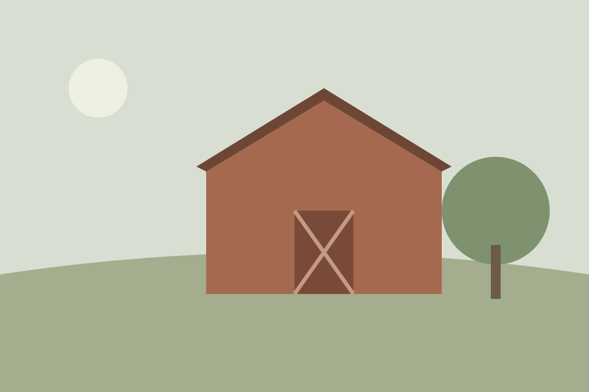
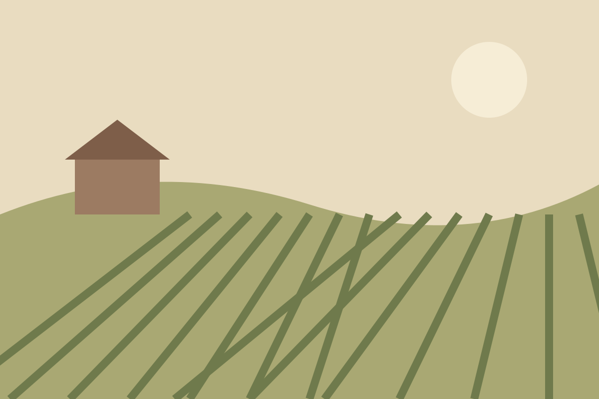
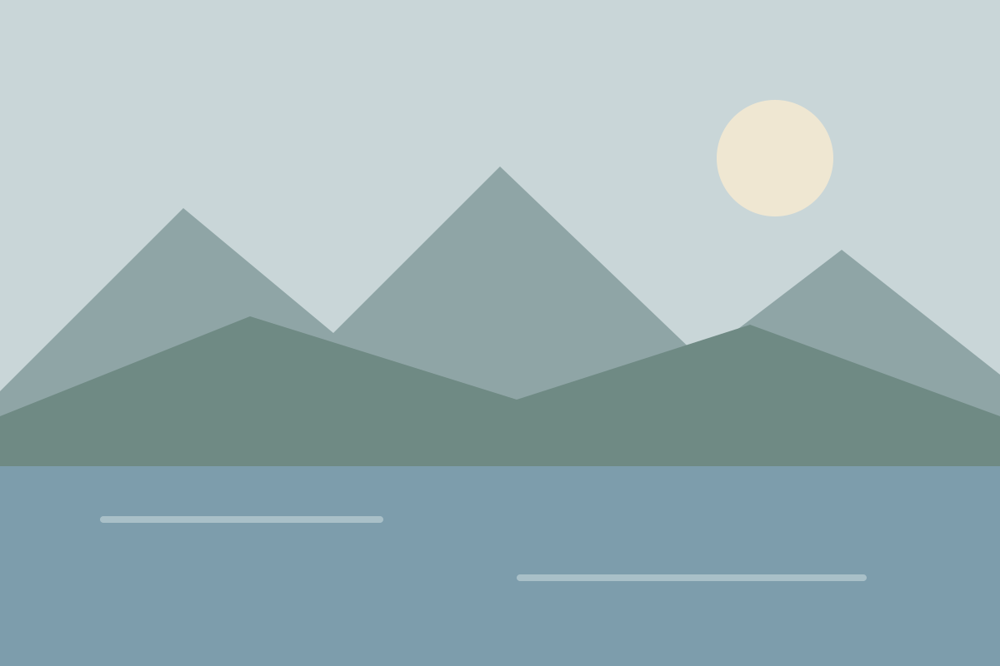

1 / 820 - 120Kanton Zürich
Landgut Amselfeld
Ein alter Gutshof mit Innenhof und Scheune, ruhig gelegen zwischen Obstwiesen. Trauung im Garten, Fest unter dem Dachstock.
- Mittel
- Rustikal
3 Locations

1 / 8Ein alter Gutshof mit Innenhof und Scheune, ruhig gelegen zwischen Obstwiesen. Trauung im Garten, Fest unter dem Dachstock.

1 / 8Weingut mit Blick über die Reben. Apéro im Weinkeller, Dinner in der Trotte, auf Wunsch mit eigenen Weinen.

1 / 8Direkt am Wasser, mit Terrasse und eigenem Steg. Für Feiern, die vom Nachmittag bis in die Nacht dauern.
Ihre Merkliste ist noch leer.
Locations entdecken100 Locations
Ihre Merkliste ist voll: Es passen 100 Locations hinein. Entfernen Sie eine, um eine neue zu merken.
Weingut mit Blick über die Reben. Apéro im Weinkeller, Dinner in der Trotte, auf Wunsch mit eigenen Weinen.